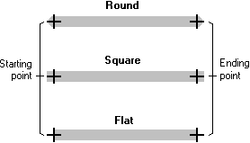

The end cap attribute specifies the shape of a geometric pen: round, square, or flat. The following illustration shows parallel lines drawn using each type of end cap.

The round and square end caps extend past the starting and ending points of a line drawn with a geometric pen; the flat end cap does not.
Â
Â